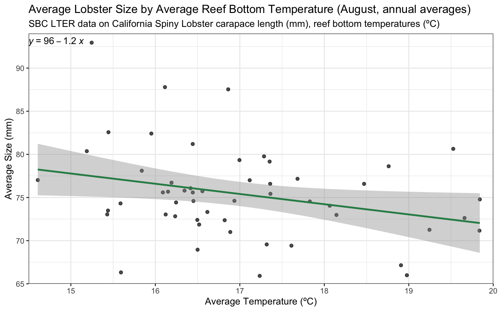

In this Quarto Document, I’ll be working with data from the Santa Barbara Coast LTER sites, analyzing data using statistical analysis methods covered in the Master of Environmental Data Science program’s Environmental Data Science (EDS) 222: Statistics for Environmental Data Science course taught by Tamma Carleton (tcarleton@ucsb.edu).
I first became interested in lobsters in 2021 during the pandemic, when I, and millions of other lobster laypeople came across a now TikTok- and YouTube-famous Maine Lobster fisherman’s videos. In these clips, Jacob Knowles, the current lead of a multi-generational, family-owned lobster fishing operation, candidly portrays what it’s like to be a lobster fisherman in Maine during lobster season. This is a gross generalization, and there are many nuances, including casually disseminated lobster facts and information, special close-ups on rare lobsters (sometimes blue, recently a 1-in-50 Million chance [half-blue-half-red](https://www.independent.co.uk/news/world/americas/lobster-half-blue-maine-tiktok-bowie-b2450916.html) lobster named Bowie.
I later learned that Maine Lobster fisheries are threatened by climate change, with rising sea temperatures and environmental pressures pushing American Lobster (Homarus americanus) populations farther north or into general decline if not managed appropriately (Stancioff, 2016, Greenhalgh, 2016, Rheuban et. al., 2017). Intense warming in waters on the East Coast coupled with failure to act and adapt quickly enough has already led to the collapse of the Gulf of Maine cod fishery (Pershing et. al., 2015).
Lobsters are sensitive to change, and it can impact their behavior (Quin, Rochette, 2015). Recent studies suggests that changing sea temperatures have implications on the size at which Homarus americanus reach maturity, and bacterial diversity and cultivability (Ellertson et. al., 2022, Ishaq et. al., 2023). Warming that impacts areas that juvenile lobsters rely on can lead them to become inhospitable, which is particularly dangerous as the Gulf of Maine has been warming at a rate faster than 99% of the world’s oceans (Rheuban et. al., 2017, Gulf of Maine Research Institute, 2021).
Given all of this established background and concern over the American Lobsters, as a Santa Barbara resident and lifelong fan of the California coast and all of its marine life, I wondered if the California Spiny Lobster Panulirus interruptus, was facing similar threats.
The species is currently listed as a species of “least concern” on the IUCN Redlist, and their populations have been managed by the California Department of Fish and Wildlife for decades. If you aren’t already convinced, I’m happy to inform you that the CA Spiny Lobster is significant both economically and ecologically. In the 2017-2018 fishing season, the commercial fishery accounted for roughly $12.7 million in ex-vessel value, and the recreational fishery contributes “between $33-40 million in consumer spending to the California economy each year,” (California Department of Fish and Wildlife, 2019).
Do you think kelp forests are cool? Well, these lobsters are also a keystone species in California’s kelp forest ecosystems. They’re a key predator of purple sea urchins, which love to eat the kelp that the rest of the ecosystem depends on. Spiny lobsters relieve this predation (urchin grazing) on Giant Kelp forests and as many larger fish prey on these lobsters, they are a key, mid-trophic level species (California Department of Fish and Wildlife, 2019). They typically forage at night, and according to the CADFW’s Marine Species Portal, “Spiny lobster provides an important role in the ecology of rocky reefs, and it is associated with critical habitats such as surfgrass beds,” (California Department of Fish and Wildlife, 2019).
The Santa Barbara Coast and the Channel Islands National Park are key areas of the Spiny lobsters’ habitat:
The presence of eelgrass or surfgrass in the rocky reefs in these areas provide critical habitat for the 11 larval stages of Spiny lobsters.
The Santa Barbara Coastal Long Term Ecological Research project (SBC LTER) has many study sites at which a wide variety of data are collected, from fish abundance and population dynamics to complex water chemistry and temperature data. Using this data and the context given above, I tried to answer the question: What is the relationship between California Spiny Lobster populations and Reef bottom temperatures?
To answer this, I used Carapace Length as it is the primary size metric for lobsters and is used as a proxy measurement for age. I also used reef bottom temperatures (as apposed to sea surface temperatures (SST). All of this data was collected at reef study sites in the SBC LTER network.
El Niño Barnard, P., Hoover, D., Hubbard, D. et al. Extreme oceanographic forcing and coastal response due to the 2015–2016 El Niño. Nat Commun 8, 14365 (2017). https://doi.org/10.1038/ncomms14365
California Department of Fish and Wildlife, Marine Species Portal : https://marinespecies.wildlife.ca.gov/california-spiny-lobster/true/
California Department of Fish and Wildlife. 2019 California Spiny Lobster, Panulirus interruptus, Enhanced Status Report.
Contributors: Jenny Hofmeister, Carlos Mireles, Julia Coates, Travis Buck, Tom Mason, Doug Neilson (2019)
Spiny lobsters mature at about 5 years of age, or 2.5-inch carapace length. They have a complex, 2-year reproductive cycle from mating to the settlement of juvenile lobsters. Fecundity increases with size, and females produce one brood of eggs per year.
2.5 inches = 63.5 mm
Paper commonly referenced to for size and age estimates at different life cycle stages of California Spiny Lobster:
Engle J. M. (1979). Ecology and growth of juvenile California spiny lobster, Panulirus interruptus (Randall) (Los Angeles, California, United States: University of Southern California).
SBC LTER long term kelp forest study sites
The five SBC LTER Reef sites that I’ll be using data from in this analysis are:
Arroyo Quemado Reef: site code “AQUE”
Arroyo Quemado Reef depth range from 5.4 m to 10.7 m. Reference on Land is close to US101/Arroyo Quemada Ln.
Naples Reef: site code “NAPL”
Naples Reef is located on the Santa Barbara Channel near the community of Naples and Dos Pueblos Canyon, Santa Barbara County, CA. Depth ranges from -5.9 to -13.4 meters.
Isla Vista Reef: site code “IVEE”:
Isla Vista (IV) Reef is located on the Santa Barbara Channel near the University of California Santa Barbara, CA. Depth range is from -8.2 to -8.8 meters.
Mohawk Reef: site code “MOHK”:
Mohawk Reef: Mohawk Reef depth ranges from 4.5m to 6.0 m. Reference on land is Mohawk Rd / Edgewater Way.
Carpinteria Reef: site code “CARP”:
Carpinteria Reef is located on the Santa Barbara Channel offshore of the Carpinteria Salt Marsh. Depth range is from -2.2 to -8.8 meters
I’ve labeled these on a screenshot of a geographically contextual rendered map preview from the SBC LTER site:
SBC LTER selected site locations
About the Data
Dataset 1: SBC LTER: Reef: California Spiny Lobster Data
This dataset contains records on the abundance, size, and fishing effort on the California Spiny Lobster, Panulirus interruptus, at five SBC LTER study sites, with records from August 2012 to August 2023.
While most data was collected in the month of August at the selected study sites, there is a discrepancy that is very relevant to our analysis. - In 2014, the Arroyo Quemado Reef (site code AQUE) only had data collected in September (56 observations), and the Isla Vista Reef site (site code IVEE) had 6 carapace length observations collected in September and 114 in August of that same year.
This is relevant to our analysis because both carapace length and ocean temperatures are related to the time of year – as more time passes, lobsters grow in size, and water temperatures fluctuate seasonally, as shown in this data visualization of monthly mean temperatures from Shore Stations (one of the Scripps Institution of Oceanography’s programs that works to collect daily temperature (SST) and salinity records at sites along the California coast from La Jolla to Trinidad)
5 year monthly mean SSTs vs long-term averages
Notes on methods, limitations: - transects were sampled by two SCUBA divers during daylight hours – this is notable because lobsters are most active at night, which may add further limitations on the ability of the sample of the population, so any conclusions we come to based on our analysis of these data may not have as much significance or strength in our ability to make claims about the true population.
Data Citation:
Reed, D. and R. Miller. 2023. SBC LTER: Reef: Abundance, size and fishing effort for California Spiny Lobster (Panulirus interruptus), ongoing since 2012 ver 9. Environmental Data Initiative. https://doi.org/10.6073/pasta/3595322687af94cd532620ad9db94c77 (Accessed 2023-11-22).
Figure Citation:
Carter, Melissa L.; Flick, Reinhard E.; Terrill, Eric; Beckhaus, Elena C.; Martin, Kayla; Fey, Connie L.; Walker, Patricia W.; Largier, John L.; McGowan, John A. (2022). Shore Stations Program Data Archive: Current and historical coastal ocean temperature and salinity measurements from California stations. UC San Diego Library Digital Collections. https://doi.org/10.6075/J0S75GHD (Accessed 2023-12-12)
Dataset 2: SBC LTER: Reef: Bottom temperature data
This dataset contains records of the water temperature at the bottom (or a relatively low, non-surface depth) at nine of the SBC LTER Reef study sites in 15 minute intervals beginning in 2000 up to July 4th, 2023. I accessed this continuous water temperature dataset via the EDI Data Portal. The primary data file on this portal is a .csv, which is 372.8 MB. The key variables that I’ll be using in this data set are:
Site_code (default column name: SITE), which contains a string of the name of the field site that each measurement was taken at. Note that the depth of temperature logger at each site varies from 4.95 to 8.15 meters.
date (default column name: DATE_LOCAL), which contains the date of observation in the format YYYY-MM-DD
Temperature in Celsius (default column name: TEMP_C): Ambient water temperature, measured with Onset tidbit. “tidbit” refers to the measurement instrument, a 32K StowAway TidbiT (-5 deg C to 37 deg C) manufactured by Onset Computer Corporation.
The NA code for this dataset is -99999.
You can download the data using this link, or you can copy and paste that download link directly into your read_csv() function as I did in my analysis below.
Data Citation:
Santa Barbara Coastal LTER, D. Reed, and R. Miller. 2023. SBC LTER: Reef: Bottom Temperature: Continuous water temperature, ongoing since 2000 ver 29. Environmental Data Initiative. https://doi.org/10.6073/pasta/3071d4179516b5ae56018bfa03fea9dd (Accessed 2023-12-03).
Importing libraries
Code
# for tidy data etc.library(tidyverse)library(janitor) library(lubridate)# for output formattinglibrary(gt)library(tufte)library(patchwork) # for displaying multiple plots# for reading in datalibrary(here) # for reproducible filepaths (like os in Python)library(readr)# for analysislibrary(vegan) # for creating a diversity indexlibrary(feasts)library(tsibble)library(forecast)# for nice regression outputlibrary(sjPlot)
Reading in the Data
Lobster Data:
Code
# read in lobster abundances & size data from EDI portal linklobster_data <-read_csv("https://portal.edirepository.org/nis/dataviewer?packageid=knb-lter-sbc.77.9&entityid=f32823fba432f58f66c06b589b7efac6",na =c("-99999")) # specifying NA value labelslobster_size <- lobster_data %>%clean_names() %>%# lower_snake_case column names# this dataset also has abundance, along with other information that we won't be using in our analysis. let's select what we're interested in:mutate("month"= lubridate::month(date, label =FALSE)) %>%select(year, month, date, site, size_mm) %>%# filtering out NA values for size_mm drop_na(size_mm)head(lobster_size, 2) %>%gt()
year
month
date
site
size_mm
2012
8
2012-08-20
IVEE
70
2012
8
2012-08-20
IVEE
60
Reef bottom temperature data:
Code
# this is a large file (372.8 MiB), so don't be alarmed if this step takes a whilewater_data <-read_csv("https://portal.edirepository.org/nis/dataviewer?packageid=knb-lter-sbc.13.29&entityid=d707a45a2cd6eee1d016d99844d537da")water_data <- water_data %>%clean_names() %>%rename("date"= date_local) %>%# cleaning namesmutate("year"= lubridate::year(date), # adding columns to join by"month"= lubridate::month(date)) %>%# and filter later onselect(year, month, date, site, temp_c)head(water_data, 2) %>%gt()
year
month
date
site
temp_c
2002
8
2002-08-21
ABUR
14.56
2002
8
2002-08-21
ABUR
14.56
Preliminary plotting, data exploration
Let’s check our data for normality to see what our options are in terms of analysis:
Code
# check to see if normally distributedmean_size <-mean(lobster_size$size_mm)sd_size <-sd(lobster_size$size_mm)lobster_size_dist <-ggplot(data = lobster_size) +geom_histogram(aes(x = size_mm),fill ="seagreen",color ="black",bins =45) +geom_vline(xintercept = mean_size,linetype ="dashed",color ="skyblue",linewidth =0.8,size =0.6) +geom_vline(xintercept = mean_size + (2* sd_size),linetype ="dotted",size =0.6) +geom_vline(xintercept = mean_size - (2* sd_size),linetype ="dotted",size =0.6) +theme_bw() +labs(title ="Distribution of California Spiny Lobster Size", subtitle ="SBC LTER CA data (2012-2023), size measured by carapace length (mm)",x ="Carapace Length (mm)",y ="Count")## Warning: Using `size` aesthetic for lines was deprecated in ggplot2 3.4.0.## ℹ Please use `linewidth` instead.lobster_size_dist
The data appears relatively normally distributed, with a clear aggregation of the data around the mean (light blue, dashed line) and the bulk of the data within two standard deviations away from the mean (black dotted lines). There is also a right tail indicating several counts of higher values.
The data appears relatively normally distributed, with a clear aggregation to the slight left of the mean (blue dashed line) the bulk of the data falling within 2 standard deviations away from the mean (dotted black lines) . There is also a right tail and right skew.
To know what we should do with our “outlier” September data records, let’s see the number of data points that were collected in September at the two sites we know they were collected at.
Code
sept_data <- lobster_size %>%filter(month ==9) # we can also see that the only year that size data was collected in was 2014#print(unique(sept_data$year))print(unique(sept_data$site))## [1] "IVEE" "AQUE"# finding proportion of IVEE data collected in September, 2014iv_2014 <- lobster_size %>%filter(site =="IVEE", year ==2014) iv_sept <- iv_2014 %>%filter(month ==9) iv_sept_pct <-nrow(iv_sept) /nrow(iv_2014) *100# we can also see that all of site AQUE's data in 2014 was collected in September:aq_2014 <- lobster_size %>%filter(site =="AQUE", year ==2014)aq_sept <- aq_2014 %>%filter(month ==9) aq_sept_pct <-nrow(aq_sept) /nrow(aq_2014) *100print(paste0("The September data records account for ", round(iv_sept_pct, 2), "% of IVEE Reef's 2014 data points"))## [1] "The September data records account for 5.26% of IVEE Reef's 2014 data points"print(paste0("The September data records account for ", round(aq_sept_pct, 3), "% of AQUE Reef's 2014 data points"))## [1] "The September data records account for 100% of AQUE Reef's 2014 data points"
Preliminary exploration shows us that the primary month that data was collected in is August (month == 8), with the exception of AQUE and IVEE study sites in 2014, where data was collected in September (site IVEE (around 5% of the site’s 2014 observations) and AQUE (100% of the site’s 2014 observations)).
As 2015 is an important year for our study (El Niño), it is important to have a baseline of lobster carapace size from the year before. Because this data collection began in 2012, leaving out the 2014 September data for the AQUE site would mean only have 2 years of precedent before the El Niño event. Having only
Due to the nature of lobster carapace size increasing over time (positive age-size relationship), if we include the 2014 September data for AQUE, we could get a falsely high “baseline” carapace size for that study site before the El Niño event, which could skew our results. An additional concern I have is about how our average Reef bottom temperature data will interact in all of this. Sea surface temperatures fluctuate over time and both seasonal variation and wind levels can impact ocean temperatures on the California Coast (Mendessohn et. al., 2004, Castelao and Wang, 2014).
Another issue that comes up with excluding 2014 data for the AQUE study site is that in all other sites, the avereage carapace size (mm) was greater in 2014 than in 2013. This could mean that by excluding 2014 data for the AQUE study site, in our attempt to avoid a falsely high baseline/comparison point, we are obtaining a falsely low one. If we include both months of 2014 data, the IVEE study site is also skewed to have higher average carapace sizes for that year, as I’ll show later.
We have a few options here. We could either limit our dataset to just August (month == 8) to get a more even and fairly comparable set of averages across sites in our data, or include the September data and continue on with our analysis, keeping this discrepancy in mind. Another option is to make two subsets, one of just August data, and another of all of our data, and run our regression and analyses on both separately. We could also make an estimate of what we’d expect the average carapace length to be in August, 2014 for site AQUE and not include the September data for AQUE or IVEE. Another option would be to omit site AQUE from our analysis, and exclude the September data from site IVEE.
Thus, in this analysis, I will make two subsets: one in which we keep all of our data (denoted in our outputs as August data and August & September data), and the other will only include data collected in August. We can compare the results of our statistical analyses as we go.
Averages
Making subsets, taking names means
First, we’ll make two subsets (August vs. August & September) and then we’ll plot the average carapace lengths over time, grouped by site,
Code
# making a tidied subset, finding average count and size per year per site# keeping data from August and Septemberlobster_all <- lobster_size %>%group_by(year, month, site) %>%summarize(avg_size =mean(size_mm, na.rm =TRUE),max_size =max(size_mm, na.rm =TRUE), min_size =min(size_mm, na.rm =TRUE))## `summarise()` has grouped output by 'year', 'month'. You can override using the## `.groups` argument.# keeping August data onlylobster_august <- lobster_size %>%filter(month(date) ==8) %>%group_by(year, site) %>%summarize(avg_size =mean(size_mm, na.rm =TRUE),max_size =max(size_mm, na.rm =TRUE), min_size =min(size_mm, na.rm =TRUE))## `summarise()` has grouped output by 'year'. You can override using the## `.groups` argument.
# plot average lobster size per site per year, including September datalobster_size_plot_all <- lobster_all %>%ggplot() +geom_point(aes(x = year, y = avg_size,color = site)) +geom_line(aes(x = year, y = avg_size,color = site)) +# carapace length at sexual maturity geom_hline(yintercept =63.5,linetype ="dashed",alpha =0.6) +# catch lengthgeom_hline(yintercept =82.55,linetype ="dashed",alpha =0.6) +# 2015 El Niñogeom_vline(xintercept =2015,linetype ="dotted") +facet_wrap(~site) +theme_bw() +theme(strip.background =element_rect(fill ="transparent")) +labs(#color = "Site",x ="Year",y ="Average Carapace Length (mm)",title ="Annual average Spiny Lobster carapace length (2012-2023)",subtitle ="organized by SBC LTER study site") +theme(legend.position ="none")lobster_size_plot_all
Code
# plot average lobster size per site per yearlobster_size_plot_august <- lobster_august %>%ggplot() +geom_point(aes(x = year, y = avg_size,color = site)) +geom_line(aes(x = year, y = avg_size,color = site)) +# showing lobster size of sexual maturity geom_hline(yintercept =63.5, linetype ="dashed", color ="dimgrey", alpha =0.5) +geom_hline(yintercept =82.55, linetype ="dashed", alpha =0.5) +geom_vline(xintercept =2015, linetype ="dotted") +# showing 2015 El Niñofacet_wrap(~site) +theme_bw() +theme(strip.background =element_rect(fill ="transparent")) +labs(#color = "Site",x ="Year",y ="Average Carapace Length (mm)",title ="Annual average Spiny Lobster carapace length (2012-2023)",subtitle ="organized by SBC LTER study site, data collected in August only") +theme(legend.position ="none")lobster_size_plot_august
The vertical dotted line indicates the first year of the 2015-2016 El Niño
The lower dashed horizontal line indicates the average estimated size (and corresponding age) at which the California Spiny Lobster reaches sexual maturity: around 2.5 inches (63.5 mm), or 58mm and 5 years old for Males and 70 mm and roughly 7 years old for Females (California Department of Fish and Wildlife, 2019), (Lindberg 1955, in Engle 1979).
The higher dashed horizontal line indicates the minimum legal catch size: a carapace measuring 3.25 inches or 82.55 mm, or around 8-13 years old (estimated age range of 7-11 for Males, 8-13 for Females) (California Department of Fish and Wildlife, 2019).
Interpretation
Note the significant difference in slopes between year 2014 and 2015 data points for average carapace size (mm) at the AQUE study site between the September-inclusive and September-exclusive (August only) plots. There is also a subtle change at the IVEE study site between 2014 and 2015 between the two plots as well, supporting what we know about how carapace lengths increase over time, even on a monthly level.
Taking the average size (carpace length) per site per year showed potentially interesting trends. At all sites, there is a notable drop in average carapace length (mm) from 2014 to 2015, both including and excluding September 2014 data. This significant change in slope of the lines connecting data points for average carapace length coincides with the 2015/2016 El Niño, which was the strongest over a 145 year record (Barnard et. al., 2017). During El Niño events, sea surface temperatures (SST) rise, and SST estimates can also serve as an indicator for coastal ocean temperature levels – if SST is rising, the temperatures at the bottom of relatively shallow, coastal reef sites are likely rising as well. In some cases, depending on the thermocline (inverted or not) that a reef experiences, Sea Bottom Temperatures (SBT) can even be higher than SST (Florida Fish and Wildlife Conservation Commission).
These visualizations suggests that the Santa Barbara Coast LTER sites are somewhat of a haven for California Spiny lobsters in their first few of years of breeding, as stated on the CADFW info page on the California Spiny lobster. As this graph shows an average carapace size, and lobsters can vary significantly in size depending on their age, these research sites are likely home to a wide age and developmental stage range of lobsters.
Let’s move on to incorporate the other essential data in investigating the relationship between reef bottom temperatures and average lobster size (carapace length, mm), – Reef bottom temperature!
Average reef bottom temperature over time
Our reef bottom temperature data is pretty huge – temperatures were recorded every 15 minutes at multiple SBC LTER study sites since 2002.
Regarding our previous dilemma of “to include or not to include” September carapace length data, we now have an opportunity to decide how we want to aggregate our reef bottom temperature data. I could filter it by month, keeping temperature records only from the month of August, or I could include September as well. I could also have another different subset, which incorporates temperature data from August and September only at sites IVEE and AQUE for 2014, and filter it to only keep August dates for all other sites that year and all sites at all years. This can get pretty complicated pretty quickly, as the easiest inclusive option – filtering just for August and September – has the drawback of interfering with the estimated relationship between average carapace length and water temperature for the majority of our data.
In my analysis, I’ve decided to only select reef bottom temperature records in the month of August, which I then average and join with the lobster data by year and by site.
First, we’ll plot the average August reef bottom temperature per year across all sites, noting the spike in temperature in the first year of the 2015/2016 El Niño. This dataset ranges from 2002 to 2023, but the last month of the record is July, so we’ll have August data spanning from 2002-2023 before we join it with our lobster data set. Then, we’ll plot the average August temperatures over time by site, comparing with the average size by site plot created earlier.
Code
# prepping water temp data to compare with lobster data# finding average August reef bottom temperatures across all sites over # the full time range of our water dataset (2002-2022)allsites_aug_temps <- water_data %>%filter(month %in%c(8)) |># select August tempsfilter(site %in%c((unique(lobster_size$site)))) %>%# selecting Lobster data study sitesgroup_by(year) %>%summarize(avg_temp =mean(temp_c, na.rm =TRUE)) # find avg tempaugust_temps <- water_data %>%filter(site %in%c((unique(lobster_size$site)))) %>%filter(month ==8)mean_aug_temp <-mean(august_temps$temp_c)print(paste0("The average August reef bottom temperature across the 5 reef study sites from 2002-2022 is ", round(mean_aug_temp, 2), "ºC."))## [1] "The average August reef bottom temperature across the 5 reef study sites from 2002-2022 is 16.19ºC."
Code
# making a subset to show selected year rangeallsites_aug_temp_plot <-ggplot(data = allsites_aug_temps) +geom_point(aes(x = year, y = avg_temp)) +geom_line(aes(x = year, y = avg_temp)) +geom_vline(xintercept =2015, linetype ="dotted") +# showing 2015 El Niño scale_x_continuous(breaks = (seq(2000,2022, by =5)), minor_breaks =seq(2002, 2022, by =1)) +theme_bw() +labs(title ="Average Reef Bottom Temperatures in August Over Time",subtitle ="across selected SBC LTER study sites (2002-2022)", x ="Year",y ="Average Temperature (ºC)") +annotate("text", x=2014, y=19, label="El Niño", angle=0) allsites_aug_temp_plot
There is a clear spike in average reef bottom temperature in August of 2015 across all study sites, and a significant dip in 2010. There is also a notable spike (and maximum peak) at all sites in 2018. There were record-breaking SST anomalies in 2018 at many points along the Southern California Coastline, particularly along La Jolla, San Diego, where the Scripps Institution of Oceanography recorded water temperatures of 25.9 degrees Celsius, beating the previous record of 25.8 C from 1931 (NASA Earth Observatory, 2018, Scripps Institution of Oceanography, 2018).
Now we’ll join the lobster size data and the temperature data, which will narrow our time range to 2012-2022.
Code
# making august-only water temp subsetaugust_site_temps <- water_data %>%filter(month(date) %in%c(8)) %>%# select August tempsfilter(site %in%c((unique(lobster_size$site)))) %>%# selecting Lobster data study sitesgroup_by(year, site) %>%# grouping by year and site to join (only 1 month, no need to group by it)summarize(avg_temp =mean(temp_c, na.rm =TRUE)) # find avg temp## `summarise()` has grouped output by 'year'. You can override using the## `.groups` argument.lobster_temps_august <-inner_join(lobster_august, august_site_temps) %>%select(-max_size, -min_size)## Joining with `by = join_by(year, site)`# this will make sure that we're comparing the same month for each site and each year, # so for most years, sites, and months, it'll be august data# but for the 2014 AQUE and IVEE data collected in September,site_temps <- water_data %>%filter(month(date) %in%c(8, 9)) %>%# select August and September tempsfilter(site %in%c((unique(lobster_size$site)))) %>%# selecting Lobster data study sitesgroup_by(year, month, site) %>%# grouping by year, month, and site, so we can join by all summarize(avg_temp =mean(temp_c, na.rm =TRUE)) # find avg temp## `summarise()` has grouped output by 'year', 'month'. You can override using the## `.groups` argument.# we'll be pairing those averages with average temperature in Septemberlobster_temps_all <-inner_join(site_temps, lobster_all) %>%# this df also has maintained its "month" columnselect(-max_size, -min_size)## Joining with `by = join_by(year, month, site)`
# plotting august temp trends per site, within our lobster data time rangeaugust_temp_trends <-ggplot(data = lobster_temps_august, aes(x = year, y = avg_temp)) +geom_hline(yintercept =16.19, linetype ="dashed", alpha =0.6) +geom_vline(xintercept =2015,linetype ="dotted") +# showing 2015 El Niñogeom_point(aes(color = site)) +geom_line(aes(color = site)) +scale_x_continuous(minor_breaks =seq(2012,2022, by=1),breaks =seq(2012,2022, by=4)) +theme_bw() +facet_wrap(~site) +theme(strip.background =element_rect(fill ="transparent")) +labs(title ="Average Reef Bottom Temperatures in August Over Time",subtitle ="organized by selected SBC LTER study sites (2012-2022)", x ="Year",y ="Average Temperature (ºC)") +# annotate("text", x=2011, y=19, label="El Niño", angle=0) # label looks messy on faceted plot, but is worthwhile to add on individual site plotstheme(legend.position ="none") # we're coloring and facet wrapping by site, so a legend is redundantaugust_temp_trends
Code
lobster_size_plot_august
The dotted vertical line in each graph once again shows the beginning of the 2015/2016 El Niño. The dashed horizontal lines in the temperature plots show the 20-year average August reef bottom temperature (from 2002-2022). The dashed horizontal lines in the average size plot show the carapace lengths at sexual maturity (lower) and catch size (higher).
Comparing our average temperature and average size plots side by side, there seems to be visual evidence for some trends or relationship between average temperature and average carapace length. At all sites, in 2015 when the average August temperature spikes, average carapace lengths decrease. At the Naples reef site, after the temperature spikes in 2018 and falls dramatically in 2019, we see a spike in average carapace length in 2019. As average August reef bottom temperatures continue to fall in 2020 in Naples, lower than the average temperature over the previous 8 years, the avereage carapace size seems to drop slightly at that site. The most extreme drops in average carapace length at sites Arroyo Quemado, Carpinteria, and Mohawk happen when the temperature spikes in 2015. When temperatures fall back down closer to the 20-year average August reef bottom temperature in 2016, the Arroyo Quemado reef site is the only site where average carapace lengths seem to recover within that annual cycle. Unfortunately, we are missing temperature data at the Mohawk reef site in 2017. Overall, there seem to be complexities in the population structures at all sites, with similar overall trends in average August reef bottom temperature.
Lobster size & reef temperature relationship
In this section, we will: - look at the general relationship between our size and temperature variables (plot)
run multiple linear regression (size = temp + site)
run multiple regression with an interaction term (size = temp + site + temp * site)
run simple linear regression (size = temp) for each site
Simple linear model plot
Before we dive into the complexities of the relationship between average carapace length in August and average reef bottom temperature in August, let’s take a more general look at the combined data that we’re working with.
Here we’ll plot our joined size & temperature data subset with data exclusively collected in August each year from 2012-2022:
Code
# preliminary plot of the joined datalobster_temps_august_plot <-ggplot(data = lobster_temps_august, aes(x = avg_temp,y = avg_size)) +geom_jitter(alpha =0.7) +geom_smooth(method='lm',formula= y~x,na.rm =TRUE,color="seagreen",se=TRUE) +scale_x_continuous(expand =c(0,0), limits =c(14.5, 20)) +scale_y_continuous(expand =c(0,0), limits =c(65, 94)) +theme_bw() + ggpubr::stat_regline_equation(aes(label =after_stat(eq.label))) +labs(title ="Average Lobster Size by Average Reef Bottom Temperature (August, annual averages)", subtitle ="SBC LTER data on California Spiny Lobster carapace length (mm), reef bottom temperatures (ºC)", x ="Average Temperature (ºC)",y ="Average Size (mm)")# view plotslobster_temps_august_plot

There seems to be a relationship here, where as average reef bottom temperatures increase, average lobster carapace lengths decrease, though with relatively few data points here and the impact that site may have on this relationship not accounted for in this plot, it’s hard to make any real claims.
Multiple regression
With our current data, we can model the relationship between average carapace length (mm) in August with the following multiple regression equation:
\[\mu CL_i =\beta_{0}+\beta_{1} \mu Temp_i +\beta_{2} \text Site+\varepsilon_i\] Where
\(\mu CL\) is the average carapace length, in millimeters, in August
\(\beta_{0}\) is the intercept, or expected average carapace length, in millimeters, when the average August temperature is 0ºC and site is held constant (for our reference site, AQUE)
\(\beta_{1}\) is the slope or expected change in average carapace length given a 1 unit change in average temperature (1ºC), when site is held constant (for our reference site, AQUE)
\(\beta_{2}\) is the difference in slope or expected change in average carapace length given a 1 unit change in average temperature (1ºC) between our reference group (site AQUE) and each other site.
\(\varepsilon\) is our error term, containing everything else that impacts average expected carapace length as measured in August.
Once again, whenever I say “average”, followed by any term, I’m referring to the average of that variable as measured in August of each year.
# run simple linear regression on temp and size, taking temperature differences at each site into account# for august-only datalobster_temp_reg_august <-lm(formula = avg_size ~ avg_temp + site, data = lobster_temps_august)summary(lobster_temp_reg_august)## ## Call:## lm(formula = avg_size ~ avg_temp + site, data = lobster_temps_august)## ## Residuals:## Min 1Q Median 3Q Max ## -9.6259 -2.6510 -0.0654 2.8737 9.6802 ## ## Coefficients:## Estimate Std. Error t value Pr(>|t|) ## (Intercept) 93.91490 8.31355 11.297 5.42e-15 ***## avg_temp -1.15605 0.47209 -2.449 0.018119 * ## siteCARP 0.40784 1.82070 0.224 0.823727 ## siteIVEE 0.05678 1.89255 0.030 0.976194 ## siteMOHK -2.10646 1.86603 -1.129 0.264693 ## siteNAPL 6.97474 1.82887 3.814 0.000398 ***## ---## Signif. codes: 0 '***' 0.001 '**' 0.01 '*' 0.05 '.' 0.1 ' ' 1## ## Residual standard error: 4.163 on 47 degrees of freedom## Multiple R-squared: 0.4368, Adjusted R-squared: 0.3769 ## F-statistic: 7.291 on 5 and 47 DF, p-value: 3.988e-05# for september-inclusive lobster data and august-only water temp datalobster_temp_reg <-lm(formula = avg_size ~ avg_temp + site, data = lobster_temps_all)summary(lobster_temp_reg)## ## Call:## lm(formula = avg_size ~ avg_temp + site, data = lobster_temps_all)## ## Residuals:## Min 1Q Median 3Q Max ## -10.625 -3.454 -0.588 2.761 12.858 ## ## Coefficients:## Estimate Std. Error t value Pr(>|t|) ## (Intercept) 90.02977 9.01170 9.990 2.08e-13 ***## avg_temp -0.90952 0.51055 -1.781 0.08103 . ## siteCARP 0.04873 1.94640 0.025 0.98013 ## siteIVEE 1.09731 1.97698 0.555 0.58139 ## siteMOHK -2.44155 1.99782 -1.222 0.22751 ## siteNAPL 6.67287 1.95709 3.410 0.00131 ** ## ---## Signif. codes: 0 '***' 0.001 '**' 0.01 '*' 0.05 '.' 0.1 ' ' 1## ## Residual standard error: 4.556 on 49 degrees of freedom## Multiple R-squared: 0.3663, Adjusted R-squared: 0.3017 ## F-statistic: 5.666 on 5 and 49 DF, p-value: 0.0003365# use sjPlot to show a comparison of the outputs from running these modelssjPlot::tab_model(lobster_temp_reg_august, lobster_temp_reg,# title = "Multiple Regression: formula = average ~ avg_temp + site",dv.labels =c("August", "August & September"),digits =3)
August
August & September
Predictors
Estimates
CI
p
Estimates
CI
p
(Intercept)
93.915
77.190 – 110.640
<0.001
90.030
71.920 – 108.139
<0.001
avg temp
-1.156
-2.106 – -0.206
0.018
-0.910
-1.936 – 0.116
0.081
site [CARP]
0.408
-3.255 – 4.071
0.824
0.049
-3.863 – 3.960
0.980
site [IVEE]
0.057
-3.751 – 3.864
0.976
1.097
-2.876 – 5.070
0.581
site [MOHK]
-2.106
-5.860 – 1.648
0.265
-2.442
-6.456 – 1.573
0.228
site [NAPL]
6.975
3.296 – 10.654
<0.001
6.673
2.740 – 10.606
0.001
Observations
53
55
R2 / R2 adjusted
0.437 / 0.377
0.366 / 0.302
Regression Interpretation:
Interpretation of coefficients in August-only Regression:
Intercept: at the Arroyo Quemado Reef (AQUE) study site (our “dummy variable”), when the reef bottom temperature is 0 º Celsius, the expected lobster carapace size is mm (nonsensical, from the SBC LTER records of reef bottom temperatures, which have been recorded every 15 minutes, ongoing since 2002, the minimum recorded temperature of all time in our data set is r(min(water_data$temp_c)) º Celsius).
Slope: avg_temp: Holding site constant (comparing average lobster carapace lengths and average water temperatures only to those of the same SBC LTER study site), at the AQUE study site, given a one unit change in average reef bottom temperature (an increase of 1 º Celsius) as measured in August, we expect the average carapace length of lobsters to change by mm.
Interpretation of site coefficients: - Note, the coefficients following avg_temp are to be interpreted in relation to avg_temp, as it represents AQUE, our test or dummy variable.
siteCARP: For the SBC LTER Carpenteria Reef study site, given a 1 º Celsius change (increase) in avereage reef bottom temperature measured in August, we expect to see a mm increase in average lobster carapace size as compared to the AQUE site expected slope of -1.14 mm per 1 degree increase in Celsius, for a total expected change in average lobster carapace length of mm.
(moving forward, I will only describe the overall/total expected change (site___ + avg_temp)):
siteIVEE: For the SBC LTER Isla Vista Reef study site, given a 1 º Celsius increase (in average reef bottom temperature in August), we expect to see a change in average lobster carapace length of mm.
siteMOHK: For the SBC LTER Mohawk Reef study site, given a 1 º Celsius increase in average reef bottom temperature in August, we expect to see a change in average lobster carapace length of mm.
siteNAPL: For the SBC LTER Naples Reef study site, given a 1 º Celsius increase in average reef bottom temperature in August, we expect to see a change in average lobster carapace length of mm. This positive value is perhaps a sign that something more complicated is going on at this site, or perhaps in general.
\(R^2\):
Because we have multiple terms on the right side of the equation (temp + site), the adjusted \(R^2\) value is more relevant and better representative of our model. This adjusted \(R^2\) value tells us that around 38% of the variation in our data can be explained by our model, or that 38% of the change in average carapace length in August can be explained by the average reef bottom temperature in August and which study site the lobster is located in.
Interpreting Uncertainty, Significance:
There is notably more uncertainty in the September-inclusive regression than in the regression run on data collected exclusively in August, with wider confidence intervals and fewer estimates holding under an \(\alpha\) of 0.05 (bolded p-values).
The intercept estimate is a significant yet nonsensical estimate, with a significance level of 0 being met in both regressions.
In both regression summaries, the Naples reef site has it’s own relationship between average water temperature and average carapace length going in a different direction than all of the other sites – yet it’s the most statistically significant estimate of all of our sites.
The Arroyo Quemado Reef site has a statistically significant estimate under the August regression, but not under the August & September regression. This makes sense intuitively, as the variation in carapace size and temperature in September does not follow the same pattern as the rest of our data (temperatures in September are cooler than August, and the carapace sizes of our lobsters will continue to grow). From here on out, we will only be using August data in our regression models.
Multiple regression with interaction
As temperatures vary in each site, we can add an interaction term to our model to see if this may be a factor that impacts or is contributing to our uncertainty. This new equation is:
\(\mu CL\) is the average carapace length, in millimeters, in August
\(\beta_{0}\) is the intercept, or expected average carapace length, in millimeters, when the average August temperature is 0ºC and site is held constant (for our reference site, AQUE)
\(\beta_{1}\) is the slope or expected change in average carapace length given a 1 unit change in average temperature (1ºC) in August, when site is held constant (for our reference site, AQUE)
\(\beta_{2}\) is the difference in slope or expected change in average carapace length given a 1 unit change in average temperature (1ºC) in August between our reference group (site AQUE) and each other site.
\(\beta_{3}\) is the difference in slopes between our different sites, where slope is the average change in carapace length in August given a 1º C change in average reef bottom temperature in August for each site
\(\varepsilon\) is our error term, containing everything else that impacts average expected carapace length as measured in August.
Now that we know what our equation means, let’s run the multiple regression with this added interaction term on our August-only dataset:
Code
# run multiple linear regression on temp and size, taking temperature differences at each site into account# for august-only datamulti_reg_int_aug <-lm(formula = avg_size ~ avg_temp + site + avg_temp:site,data = lobster_temps_august)summary(multi_reg_int_aug)## ## Call:## lm(formula = avg_size ~ avg_temp + site + avg_temp:site, data = lobster_temps_august)## ## Residuals:## Min 1Q Median 3Q Max ## -9.1336 -2.5435 -0.0024 2.6160 8.5807 ## ## Coefficients:## Estimate Std. Error t value Pr(>|t|) ## (Intercept) 114.0656 19.8785 5.738 8.78e-07 ***## avg_temp -2.3149 1.1407 -2.029 0.0486 * ## siteCARP -35.3329 26.4319 -1.337 0.1883 ## siteIVEE -31.7450 27.1609 -1.169 0.2489 ## siteMOHK -23.6589 27.2867 -0.867 0.3907 ## siteNAPL -2.4289 26.2560 -0.093 0.9267 ## avg_temp:siteCARP 2.0644 1.5230 1.356 0.1823 ## avg_temp:siteIVEE 1.8745 1.6085 1.165 0.2503 ## avg_temp:siteMOHK 1.2408 1.5771 0.787 0.4358 ## avg_temp:siteNAPL 0.5261 1.5217 0.346 0.7312 ## ---## Signif. codes: 0 '***' 0.001 '**' 0.01 '*' 0.05 '.' 0.1 ' ' 1## ## Residual standard error: 4.225 on 43 degrees of freedom## Multiple R-squared: 0.4694, Adjusted R-squared: 0.3583 ## F-statistic: 4.226 on 9 and 43 DF, p-value: 0.0005753# use sjPlot to show a comparison of the outputs from running these modelssjPlot::tab_model(multi_reg_int_aug,title ="Multiple regression with interaction",dv.labels =c(""),# dv.labels = c("Average lobster carapace length (mm)"),digits =3)
Multiple regression with interaction
Predictors
Estimates
CI
p
(Intercept)
114.066
73.977 – 154.154
<0.001
avg temp
-2.315
-4.615 – -0.015
0.049
site [CARP]
-35.333
-88.638 – 17.972
0.188
site [IVEE]
-31.745
-86.520 – 23.030
0.249
site [MOHK]
-23.659
-78.688 – 31.370
0.391
site [NAPL]
-2.429
-55.379 – 50.521
0.927
avg temp × site [CARP]
2.064
-1.007 – 5.136
0.182
avg temp × site [IVEE]
1.875
-1.369 – 5.118
0.250
avg temp × site [MOHK]
1.241
-1.940 – 4.421
0.436
avg temp × site [NAPL]
0.526
-2.543 – 3.595
0.731
Observations
53
R2 / R2 adjusted
0.469 / 0.358
Abbreviated Regression Interpretation:
Several new features stand out in this regression output. The first is the change in extremity of our estimated site coefficients. The first avg temp coefficient can be interpreted as the expected change in average carapace length (mm) in August given a 1 unit change in our temperature variable (1º C increase in average temperature in August) holding site constant, at our reference group site AQUE.
The small p-value suggests that the probability of getting results at least as extreme as this if the null hypothesis were true is very low. That being said, only our nonsensical intercept and first coefficient, avg_temp, are statistically significant under an \(\alpha\) of 0.05. In this interaction model, we got an adjusted \(R^2\) value of around 0.36, which would suggest that roughly 36% of the variation in our data can be explained by our model, the low significance levels coupled with the higher adjusted \(R^2\) value in our non-interaction multiple regression model on August-only data of roughly 0.38 or 38% suggests that incorporating this interaction term does not yield a better model for our sample data.
Based on the nuances in the coefficients and uncertainty in the two previous models, it’s worthwhile to model each site individually in a simple linear regression model.
Simple linear regression
We can also run our linear regression model on each site, which would shift our first multiple regression equation to a simple linear model of:
\[\mu CL_i =\beta_{0}+\beta_{1} \mu Temp_i +\varepsilon_i\] where: - \(\mu CL\) is the average carapace length, in millimeters, in August at the site that we’re running this regression for - \(\beta_{0}\) is the intercept, or expected average carapace length, in millimeters, when the average August temperature is 0ºC - \(\beta_{1}\) is the slope or expected change in average carapace length in August given a 1 unit (1ºC) change in average temperature in August
The main change here is that our \(\beta_{0}\) and \(\beta_{1}\) terms are now about the particular site we’re running our regression model on, rather than having a clause of “holding site constant” or based on a reference group (site AQUE, previously).
Code
# to quickly make individual subsets for each site, we can make a subset function:site_selection <-function(siteID, data_set){ data_set %>%filter(site %in%c(siteID))}# then apply this function for each site:aque_subset <-site_selection("AQUE", lobster_temps_august)carp_subset <-site_selection("CARP", lobster_temps_august)ivee_subset <-site_selection("IVEE", lobster_temps_august)mohk_subset <-site_selection("MOHK", lobster_temps_august)napl_subset <-site_selection("NAPL", lobster_temps_august)aque_simple_reg <-lm(formula = avg_size ~ avg_temp, data = aque_subset)carp_simple_reg <-lm(formula = avg_size ~ avg_temp, data = carp_subset)ivee_simple_reg <-lm(formula = avg_size ~ avg_temp, data = ivee_subset)mohk_simple_reg <-lm(formula = avg_size ~ avg_temp, data = mohk_subset)napl_simple_reg <-lm(formula = avg_size ~ avg_temp, data = napl_subset)
Code
# show the 3 non-MPA sites' regression outputssjPlot::tab_model(aque_simple_reg, carp_simple_reg, mohk_simple_reg, title ="Simple linear regression: SBC LTER Reef study sites (not in MPAs)",dv.labels =c("Arroyo Quemado", "Carpinteria", "Mohawk"),digits =3)
Simple linear regression: SBC LTER Reef study sites (not in MPAs)
Arroyo Quemado
Carpinteria
Mohawk
Predictors
Estimates
CI
p
Estimates
CI
p
Estimates
CI
p
(Intercept)
114.066
77.205 – 150.926
<0.001
78.733
49.689 – 107.776
<0.001
90.407
51.685 – 129.129
0.001
avg temp
-2.315
-4.430 – -0.200
0.036
-0.250
-1.933 – 1.432
0.744
-1.074
-3.330 – 1.182
0.304
Observations
10
11
10
R2 / R2 adjusted
0.443 / 0.374
0.012 / -0.097
0.131 / 0.022
Code
# show the 2 MPA sites' regression outputssjPlot::tab_model(ivee_simple_reg, napl_simple_reg, title ="Simple linear regression: SBC LTER Reef study sites (within MPAs)",dv.labels =c("Isla Vista Reef", "Naples Reef"),digits =3)
Simple linear regression: SBC LTER Reef study sites (within MPAs)
Isla Vista Reef
Naples Reef
Predictors
Estimates
CI
p
Estimates
CI
p
(Intercept)
82.321
37.505 – 127.136
0.002
111.637
59.623 – 163.651
0.001
avg temp
-0.440
-3.187 – 2.306
0.725
-1.789
-4.843 – 1.265
0.218
Observations
11
11
R2 / R2 adjusted
0.014 / -0.095
0.163 / 0.070
Analysis of simple linear regression results
I was genuinely surprised by these outputs. I expected the individual relationships between average lobster size (carapace length) and average reef bottom temperature to be stronger and more statistically significant when broken down on a simple site-by-site level.
I particularly expected to see a new, negative estimate for the Naples reef site, which had previously had an oddly highly positive estimate that was surprisingly statistically significant under an \(\alpha\) level of 0.0001. When isolating that site’s data, we now have a negative estimate of roughly -1.8, but a p-value of 0.2, which is much larger than the previous p-value. This means that the probability of getting results at least as extreme as ours if the null hypothesis were true is around 20%.
Because these are simple linear models, we can use the\(R^2\) values in our interpretation of the results, rather than the adjusted \(R^2\) values.
The highest \(R^2\) value was at the Arroyo Quemado reef site, with a value of 0.44, meaning that around 44% of the variation in our data at the AQUE site can be explained by our model, or 44% of the variation in average lobster carapace size in August can be explained by the average reef bottom temperature. With both the intercept (nonsensical) and average temperature coefficient being statistically significant results under an \(\alpha\) level of 0.05, this is an exciting result.
That’s pretty much where the statistically significant “good news” ends, though classifying this as “good” or “bad” is wrong and limits our ability to learn from these results :)
The next-highest \(R^2\) value is from our Naples Reef regression, and it tells us that roughly 16% of the variation in our Naples Reef data can be explained by our model. I explained the significance of the estimates earlier, and they ultimately lead me to think that there is a lot more going on at the Naples site that is impacting average lobster size than just average reef bottom temperature.
The third-highest \(R^2\) value is from the Mohawk Reef regression output and suggests that around 13% of the variation in the Mohawk Reef data can be explained by our model (change in average reef bottom temperatures in August). The nonsensical intercept of 90 has a high siginficance level, and the estimate for the average temperature coefficient is roughly -1.1, which means that for a 1 unit change in average reef bottom temperature in August, average lobster carapace size in August at the Mohawk Reef site is expected to decrease by around 1.1 mm. This estimate has a p-value of 0.3, which is not statistically significant under our \(\alpha\) level of 0.05.
The other two sites – Carpinteria Reef and Isla Vista Reef – have high p-values for their coefficient estimates and very low \(R^2\) values, with just under 1.5% of the variation in the data able to be explained by the models.
Some key takeaways from this are that the Naples site results particularly changed after being separated from the rest of the data – the sign and degree of the temperature coefficient changed, though its significance level decreased and had a relatively low \(R^2\) value.
Another key takeaway is that our model works fairly well for the data at the Arroyo Quemado site: we obtained statistically significant estimates and an\(R^2\) value of 0.44 with just one term on the right side of the equation.
A significant limitation to this approach is that each model is run on a very limited dataset of only 10 points – yearly averages from 2012-2022 leaves us with 11 points per subset for all sites other than AQUE, which has 10 due to the lack of August lobster size data in 2014, and MOHK, which has 10 due to the lack of August temperature data in 2017.
Code
# here I tried to make a column called mpa_status, to see if there was an MPA component in the relationship between average temperature and average size. mpa_lobster_temp <- lobster_temps_august %>%mutate(mpa_status =# as.factor( (if_else(site %in%c("IVEE", "NAPL"), "MPA", "non-MPA"))#) ) %>%group_by(year, site, mpa_status)# unfortunately, I couldn't get this to work. I'll come revisit this sometime. lobster_mpa_reg <-lm(formula = avg_size ~ avg_temp + site + mpa_status, data = mpa_lobster_temp)summary(lobster_mpa_reg)
Conclusion
The limitations of the lobster data and the low quantity of statistically significant results lead me to question the strength of the results in this study for the most part. One notable exception has been with the Arroyo Quemado Reef data, where – with a simple linear model – the regression results suggest that roughly 44% of the variation in the average lobster carapace size data collected in August at that site can be explained by average reef bottom temperatures in August.
Early on in my data analysis process, I considered dropping the AQUE site altogether due to its missing August data in 2014 and unique presence of September data in that year. After continuing on with my analysis, eventually making subsets with and without that September data, running various levels of regression, and plotting averages left and right, I came to appreciate the challenge that this data posed. If I had dropped it, I would have completely missed the most statistically significant result in the whole dataset.
Additional Considerations & Possible Next Steps
Given more time and resources, there are a few elements of this analysis that I would change and several “next steps” that would be interesting to pursue.
As I have mentioned throughout this notebook, the limitations of the data at various steps proved challenging. I’ve already discussed the challenges of the September 2014 data, but I was also frustrated by the lack of temperature data for the Mohawk site in August of 2017. While I considered using functions like na.approx from the zoo package to make up for this, I ultimately ran out of time to fully achieve the outputs that would make inlcuding these steps worthwhile.
I also attempted to investigate the possible impact that MPA status (whether or not a site falls within a Marine Protected Area) had on the relationship between average August temperature and size, I also failed to get this code to yield any satisfactory outputs.
Works Cited:
Bris, A. L., Pershing, A. J., Gaudette, J., Pugh, T. L., & Reardon, K. M. (2017). Multi-scale quantification of the effects of temperature on size at maturity in the American lobster (Homarus americanus). Fisheries Research, 186, 397-406. doi:10.1016/j.fishres.2016.09.008
![]()


![The figure above shows the monthly temperature means calculated from the past 5 years (2018-2022) at all stations, shown in the solid lines, where each station is a unique color (see legend for details). This plot also shows the long-term average from every station, beginning from whatever time the station started collecting data (for details, see section above titled "General Information"). The long term averages are shown as dashed lines, where color is coordinated for each station. Notably, temperatures peak around August each year.](figs/shore-stations-monthly-mean-temp.png)